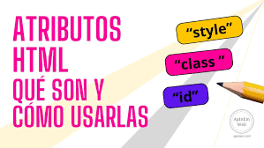
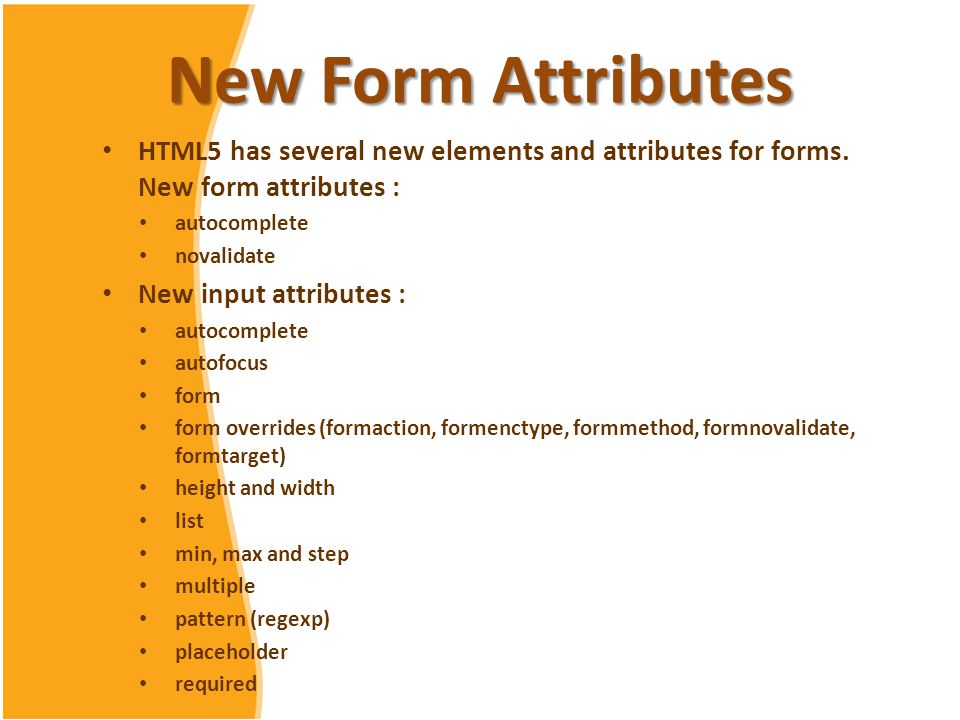

- Atributos globales.
- atributos form
- atributos input
Contenido
Atributos globales html
Los atributos globales de HTML son aquellos que pueden usarse en cualquier elemento HTML y modifican su comportamiento o características, como el diseño, la funcionalidad o la accesibilidad. Ejemplos comunes incluyen id para identificar elementos de forma única, class para agrupar elementos, style para aplicar CSS y title para mostrar un texto al pasar el cursor sobre el elemento. Estos atributos se escriben en la etiqueta de apertura, como nombre seguido de un signo igual (\(=\)) y su valor entre comillas. Ejemplos de atributos globales accesskey: Define una tecla de acceso rápido para un elemento.class: Asigna una o más clases a un elemento para ser utilizadas en CSS o JavaScript.contenteditable: Indica si el contenido del elemento es editable por el usuario.data-*: Permite almacenar datos personalizados en el elemento.dir: Especifica la dirección del texto (ej. ltr para izquierda a derecha, rtl para derecha a izquierda).hidden: Indica que el elemento no debe ser mostrado por el navegador.id: Define un identificador único para el elemento, útil para CSS, JavaScript y enlaces.lang: Especifica el idioma del contenido del elemento.style: Aplica estilos CSS directamente al elemento.tabindex: Indica el orden en que los elementos reciben el enfoque del teclado.title: Proporciona información adicional, como una descripción, que se muestra en una etiqueta emergente al pasar el cursor sobre el elemento.
Atributos form
+4 Los atributos principales de la etiqueta <form> son action, method, y enctype. action especifica la URL a la que se envían los datos del formulario, method define el método HTTP a usar (generalmente get o post), y enctype define el formato de los datos del formulario, siendo esencial cuando se envían archivos. Otros atributos incluyen name, target, autocomplete, y novalidate. Atributos clave action: Especifica la URL del script en el servidor que procesará los datos del formulario. method: Define el método HTTP para enviar los datos. Los más comunes son GET, que añade los datos a la URL, y POST, que los envía en el cuerpo de la solicitud. enctype: Especifica cómo se codifican los datos del formulario. Se usa principalmente cuando el formulario incluye la carga de archivos (por ejemplo, <input type="file">), siendo multipart/form-data el valor adecuado. name: Asigna un nombre al formulario, útil para identificarlo y procesarlo después. target: Indica dónde se mostrará el resultado de la respuesta del formulario. _blank lo abrirá en una nueva pestaña o ventana. autocomplete: Controla si el navegador autocompleta automáticamente los campos del formulario basándose en entradas previas. Puede ser on o off. novalidate: Especifica que el formulario no debe ser validado al enviarse.
Atributos input
Los atributos <input> son propiedades que personalizan la función y el comportamiento de los campos de entrada en un formulario HTML. Algunos atributos comunes incluyen type, que define el tipo de entrada (texto, número, fecha, etc.); name, que asigna un nombre al campo para su envío; value, que establece un valor por defecto; required, que indica si el campo es obligatorio; y placeholder, que muestra un texto de ayuda temporal. Atributos comunes type: Especifica el tipo de control del campo. Algunos valores comunes son: text: Campo de texto simple. password: Campo de texto que oculta la entrada con asteriscos. checkbox: Una casilla de verificación (estado de encendido o apagado). radio: Botones de opción (solo se puede seleccionar uno de un grupo con el mismo nombre). submit: Un botón para enviar el formulario. reset: Un botón para restablecer los valores del formulario a su estado inicial. number: Campo para números. email: Campo para direcciones de correo electrónico. date: Selector de fecha. name: Asigna un nombre al campo para identificarlo cuando se envían los datos del formulario. value: Define un valor predeterminado para el campo de entrada. placeholder: Muestra una sugerencia de texto dentro del campo hasta que el usuario ingresa su propio texto. required: Atributo booleano que obliga al usuario a rellenar el campo antes de enviar el formulario. size: Especifica el ancho visible del campo de entrada en caracteres. maxlength: Define el número máximo de caracteres que el usuario puede ingresar. Atributos para campos numéricos min: El valor numérico mínimo aceptable. max: El valor numérico máximo aceptable. step: Determina el intervalo (incremento o decremento) entre los valores numéricos válidos. Otros atributos útiles readonly: Un atributo booleano que especifica que el contenido de la entrada no se puede modificar. pattern: Define una expresión regular que el valor del campo debe coincidir para ser válido. multiple: Permite al usuario seleccionar varios archivos en un campo de tipo file.